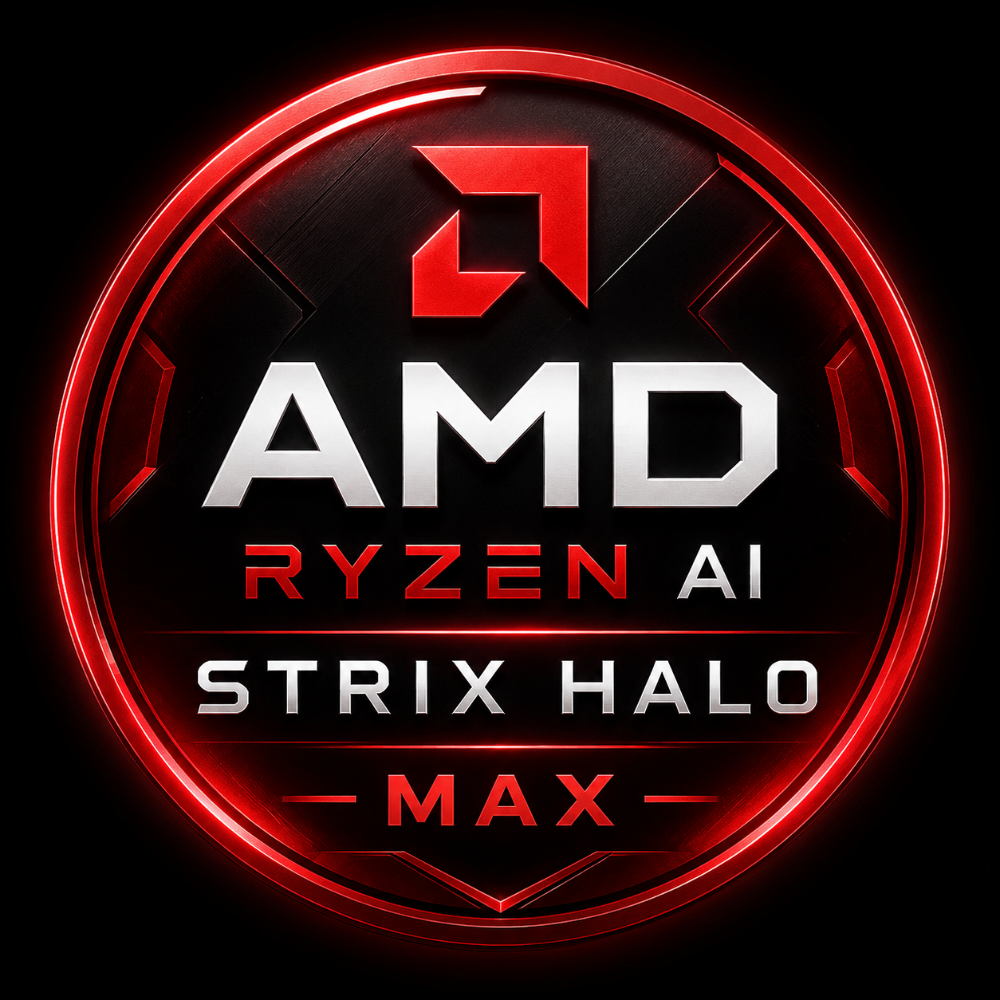

Finished workspace after the local agent created the dashboard and supporting data.
The task
Turn a messy back-office PDF folder into a customer spend dashboard.
Input
- 100+ messy invoice PDFs
- emailed copies, statements, voids, credit memos
- duplicate scans, superseded originals, appendix noise
Work
- find valid invoices only
- parse customer ID, subtotal, tax, total, status, credits
- group and total spend by customer
Output
- HTML dashboard
- customer spend totals
- invoice-level detail a human can review
Small local hardware, serious document work.
The run came from a headless AMD Strix Halo box on NixOS. That matters because the benchmark stayed local and private while using a power envelope closer to a compact workstation than a dedicated GPU rig.

The test was not a toy prompt.
It was shaped like a real back-office mess: more than 100 documents, mixed formats, financial traps, and a useful output requirement instead of a tiny synthetic score.
What the agent had to handle
The workspace included bloated invoices, email copies, financial records, statements that should not count as invoices, duplicate scans, voided documents, superseded originals, credit memos, and appendix pages that looked useful but were noise.
The deliverable was a customer spending dashboard with detail, not a single number. That forced the model to parse, exclude, group, total, and present the result.
Local AI is not just the model. It is the model, engine, settings, context budget, harness, and workflow working together.
The same hardware and model had two very different outcomes.
Ollama plus OpenClaw is familiar and easy to start, but the heavier harness and slower default path burned time and context until the run failed. Crown used a tuned Qwen3.6 35B path with a lighter harness and a prompt that matched the document parsing job.
Your data should stay local.
Crown Dynamic completed the run locally, wrote the parser, produced the data, and assembled the dashboard without handing the private document set to a cloud model.
The dashboard is the proof point. [link]
The result was not perfect, but it was productive: the model avoided every exclusion trap and built a useful customer spend dashboard. The main miss was credit memo math on two records, which is exactly the kind of edge case a real review pass would catch.
The generated HTML dashboard sorted spending by customer and exposed invoice detail for review.
Watch the comparison run.
The video shows the practical gap: the poor setup on the same hardware and model could not complete the 100+ document invoice benchmark, while the tuned Crown path got to a usable dashboard.
The user prompt matters for a different reason than harness overhead. Local models are not giant frontier systems that can reliably infer every hidden step from a vague ask, so a good local workflow gives them a clear path to succeed. The first run got a broad natural-language task. The second run gave the same goal with practical PDF parsing guidance, which helped the model stay on the path that could actually work.
Ollama + OpenClaw prompt
Go through the invoices and sort them by customer, create a dashboard that shows me each one and how much he has spent with lots of details.
Crown Halo Dynamic prompt
I want you to organize the invoices in this workspace, parse the invoice PDFs.
Use const pdf = require("/tmp/node_modules/pdf-parse")
Call await pdf(buffer, { max: 1 })
Do not use pdf.default
Do not use PDFParser
Do not manually decompress streams
Parse page 1 only; appendix pages are noise
Regex Total $..., Subtotal $..., Tax $..., Status..., Customer ID...
Exclude statements, voids, duplicate scans, and superseded originals
Subtract credit memos
Sort by customer
Make a comprehensive HTML dashboard where I can track each customer's spending
This is why people think local AI isn't ready.
Most people meet local AI through convenient defaults, heavy agent wrappers, and vague prompts. Then the run burns half an hour, fails to finish, and makes the whole category look broken. The better lesson is narrower: local models need the right stack and workflow.
The common path wasted the user's time
The Ollama + OpenClaw run used Qwen3.6 35B on the same hardware, but it moved at about 42 tokens per second, made repeated tool calls, got stuck around PDF parsing, and ran out of context after 27 minutes 18 seconds without completing the invoice benchmark.
The tuned path showed what was possible
Crown Halo Dynamic ran about 92 tokens per second and used Pi, a much smaller agent harness with less context overhead. Same hardware class, same core model family, very different result: one run failed after wasting your time, the other finished in under 6 minutes.
The takeaway for local AI.
A local model can look weak when the surrounding stack wastes context or hides performance-critical settings. Give the same hardware a tuned path, a clean harness, and task-aware instructions, and the result changes.